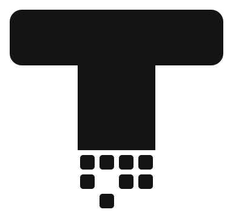

Tovek in the browser
The decompiler runs on this page, from WebAssembly, in a background worker. Pick a sample or open a
bytecode file. Nothing is uploaded.
Loading the decompiler…
Samples
Output
Drop a bytecode file here.
Paste base64 or saved script text